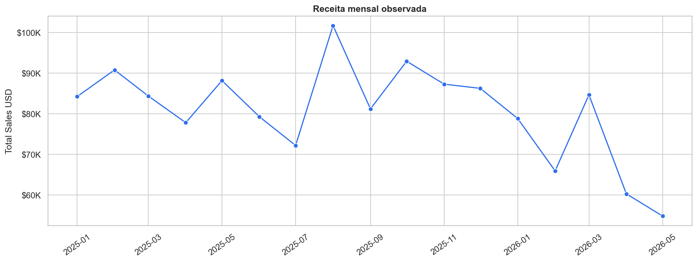
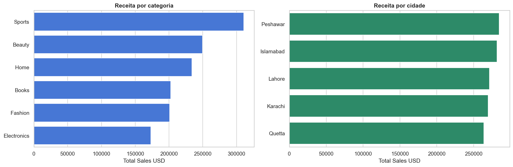
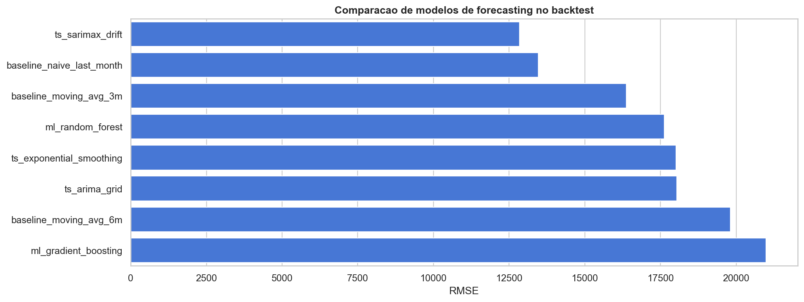
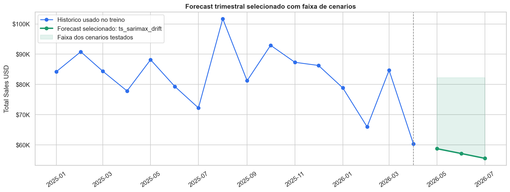
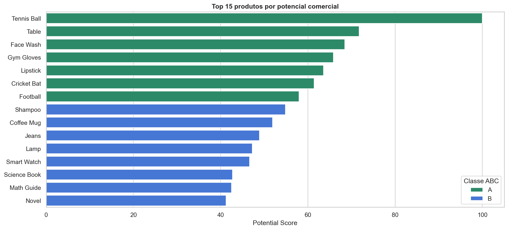
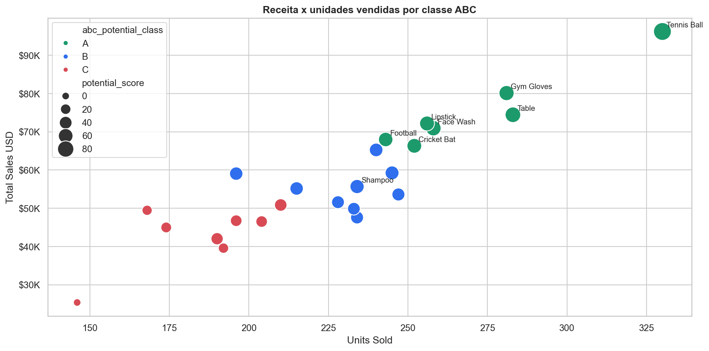

Este projeto foi construido para analisar vendas de produtos, criar uma camada visual de monitoramento e iniciar modelos analiticos que ajudem em previsibilidade de vendas e priorizacao de produtos.
A jornada seguiu a seguinte ordem:
O objetivo final e apoiar um analista de produtos com indicadores de vendas, tendencia, previsibilidade de receita e uma leitura clara de quais produtos devem receber mais atencao comercial e operacional.
A base analisada esta em:
data/raw/product_sales_dataset.csv
Campos principais:
| Campo | Uso na analise |
|---|---|
Product_ID |
Identificacao do produto/transacao |
Product_Name |
Nome do produto |
Category |
Categoria comercial |
Price_USD |
Preco unitario |
Quantity_Sold |
Quantidade vendida |
Total_Sales_USD |
Receita total da linha |
Order_Date |
Data da venda |
Customer_City |
Cidade do cliente |
A base possui 1.000 linhas e 24 produtos distintos. A janela temporal observada vai de janeiro de 2025 ate maio de 2026.
Notebook:
notebooks/01_EDA.ipynb
A EDA foi a primeira etapa porque antes de criar dashboard ou modelos era necessario entender:

Essa visao mostrou que a receita mensal varia bastante ao longo do tempo. Isso gerou dois direcionamentos importantes:

A analise por categoria e cidade ajudou a entender onde a receita esta concentrada. Esse tipo de corte e essencial para um analista de produtos porque permite responder perguntas como:
Aplicacao:
dashboard_sales_app/
O dashboard foi criado com:
Ele consome diretamente o dataset e entrega uma tela operacional para monitoramento das vendas.
Para rodar:
.\.venv\Scripts\python.exe dashboard_sales_app\main.py
URL padrao:
http://127.0.0.1:8001
O dashboard apresenta:
A EDA e util para investigacao, mas nao e adequada para acompanhamento recorrente. O dashboard resolve esse problema ao transformar as metricas em uma interface consumivel por um analista de produtos.
Ele permite:
Foi a partir dessa visao operacional que surgiram duas necessidades analiticas:
Notebook:
notebooks/02_forecasting_total_sales.ipynb
O objetivo do forecasting foi prever a receita total dos proximos 3 meses. A previsao trimestral e importante para:
Um ponto importante foi remover meses incompletos do treino. A base possui dados em maio de 2026, mas o mes nao esta completo. Se esse mes fosse usado como historico fechado, o modelo poderia interpretar uma queda artificial.
Por isso:
Foram comparadas varias abordagens:

O resultado mostrou que modelos mais sofisticados de ML nao necessariamente performam melhor quando ha pouco historico mensal. Como a serie mensal possui poucos pontos, modelos estatisticos simples foram mais competitivos.
O modelo campeao no backtest foi o ARIMA/SARIMAX com drift.

O grafico mostra:
Essa abordagem e mais defensavel porque nao apresenta apenas uma linha isolada. Ela mostra tambem a incerteza entre cenarios candidatos.
Foram considerados dois tipos de previsao:
forecast(3). O proprio modelo propaga o estado previsto para os proximos passos, sem usar valores reais futuros.Notebook:
notebooks/03_clusterizacao_produtos_abc.ipynb
A clusterizacao foi criada para responder:
Quais produtos sao mais importantes para priorizacao comercial, gestao de estoque e recomendacao?
Enquanto o forecasting olha para previsibilidade de receita, a clusterizacao olha para priorizacao de produtos.
Foram criadas features por produto, incluindo:

O ranking por potencial comercial combina varias dimensoes. Isso evita que a decisao seja baseada apenas em receita historica.

Essa visao ajuda a diferenciar:
O notebook gera tres classes diferentes, cada uma com uma funcao.
abc_revenue_class Classe ABC tradicional baseada somente em receita historica.
Ela responde:
Quais produtos mais contribuiram para a receita total ate agora?
Tecnica:
abc_cluster_class Classe derivada do K-Means.
Ela responde:
Com qual grupo de comportamento esse produto se parece?
Modelo:
KMeans(n_clusters=3)
Features usadas:
Depois os clusters sao ordenados pelo score medio de potencial:
abc_potential_class Essa e a classe final recomendada para negocio.
Ela responde:
Qual e a prioridade comercial final do produto?
Base:
potential_score
Composicao:
Regra final:
Portanto, a classe final usada no dashboard e nas decisoes deve ser:
abc_potential_class
As outras classes sao auxiliares para interpretacao.
O fluxo completo do projeto pode ser resumido assim:
EDA
-> entende comportamento, qualidade e concentracao das vendas
Dashboard
-> transforma a analise em monitoramento operacional
Forecasting
-> antecipa receita dos proximos meses
Clusterizacao ABC
-> identifica produtos prioritarios para estoque, campanha e recomendacao
A EDA mostrou padroes e variacoes nas vendas. O dashboard transformou esses achados em KPIs e graficos para acompanhamento. O forecasting nasceu da necessidade de prever o rumo das vendas. A clusterizacao nasceu da necessidade de entender quais produtos merecem maior foco operacional e comercial.
Product_sales_analysis/
|
|-- data/
| `-- raw/
| `-- product_sales_dataset.csv
|
|-- notebooks/
| |-- 01_EDA.ipynb
| |-- 02_forecasting_total_sales.ipynb
| `-- 03_clusterizacao_produtos_abc.ipynb
|
|-- dashboard_sales_app/
| |-- main.py
| |-- templates/
| | `-- index.html
| `-- static/
| |-- styles.css
| `-- app.js
|
|-- docs/
| `-- assets/
| |-- eda_monthly_sales.png
| |-- eda_segments.png
| |-- forecast_model_comparison.png
| |-- forecast_selected.png
| |-- cluster_top_products.png
| `-- cluster_revenue_units.png
|
|-- scripts/
| `-- generate_readme_assets.py
|
|-- requirements.txt
`-- readme_explanation.md
Melhorias naturais:
Com esses proximos passos, o projeto deixa de ser apenas analitico e passa a caminhar para uma ferramenta de decisao comercial e operacional.